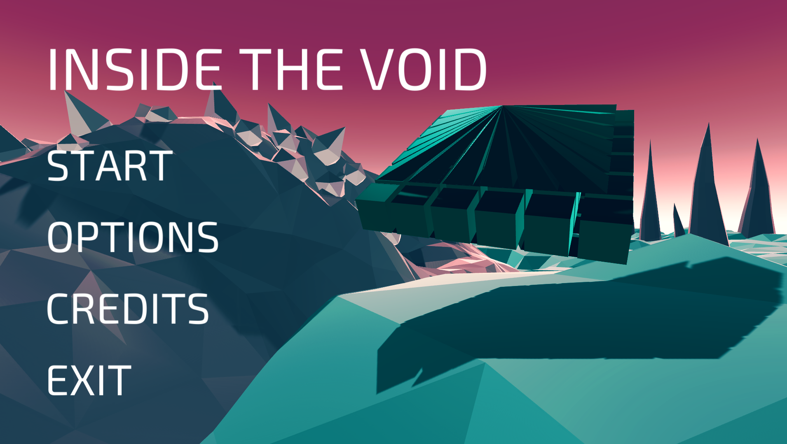
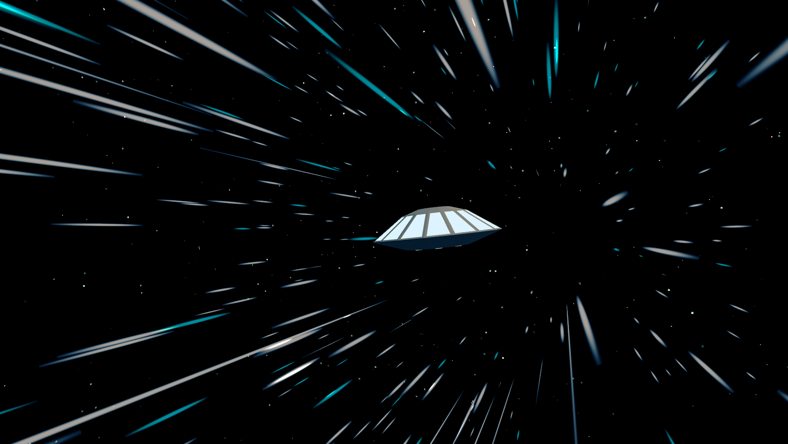
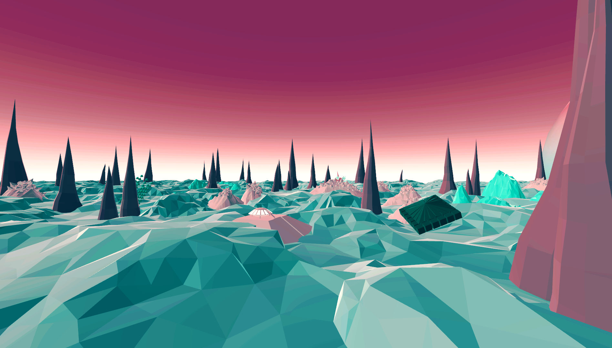
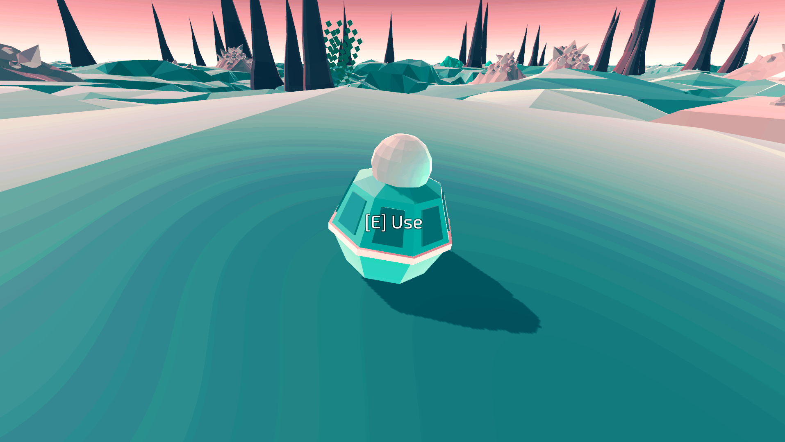
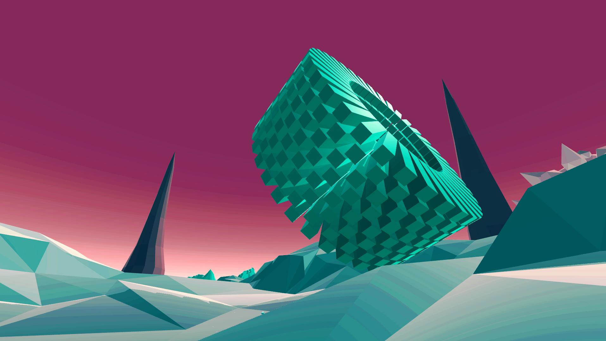

The role of any main menu is to guide the player into the game with ease and not be too detailed or advanced to manuever through. The menu does not reveal too much, but it does reveal enough of the game that the player can get a basic idea of what they may be in for just from the loading screen. Artistically speaking the use a very legible font that goes in hand with the futuristic theme that the game has. There are no issues in my eyes that need immediate change on this menu.

The startup screen is really good for the games theme. It let's the player in on the idea that you are traveling somewhere (at the time it is unknown where and why). It also links with part of the story which is the spaceship itself. This ship which can be seen in the network chart plays a role in helping the story move into a important event. It does its part very well in bringing the character into the players existence and segways fluently into the actual start of the game.

This screen capture displays the game's art as a whole. The land is something I feel the author holds a lot of pride in because of its ability to sink the player into the world that the game is developing. The sounds and land work together to slowly pull the player into a trance that sets their mind "Inside the Void". This capture also displays part of the spaceship (seen in the bottom middle) and a alien structure (seen shaded in dark green on the right side). It incorporates the size of the map into the capture because you can see where the rendering of objects end and that is also where the games world ends.

This is a capture of the nodes that play a massive role in the characters ability to complete the assigned tasks. Without these nodes there would be no way to follow what is going on and the story would not exist. The entire story comes from these nodes. Finding them was a relief because it meant that you are doing the right thing. Throughout the playthrough a player is bound to encounter around 20- 30 of these nodes. Each new one will come with its' own number label and unique message that the player uses to string the storyline together.

The structures capture. The reason that this game has a story falls into the hands of these structures. The structures are what drove the story within the nodes along. They are what kept the game mysterious because of the unknown that lied in the walls of the floating, tied together by gravity, alien structures that have caused mass casualties in the astronaut forces. The art style of these was done so to give these structures a intriguing look and make the player curious of what lies ahead of them when approaching such a large object in the world. It again had a futuristic build to their look in order to fit the theme of the game.